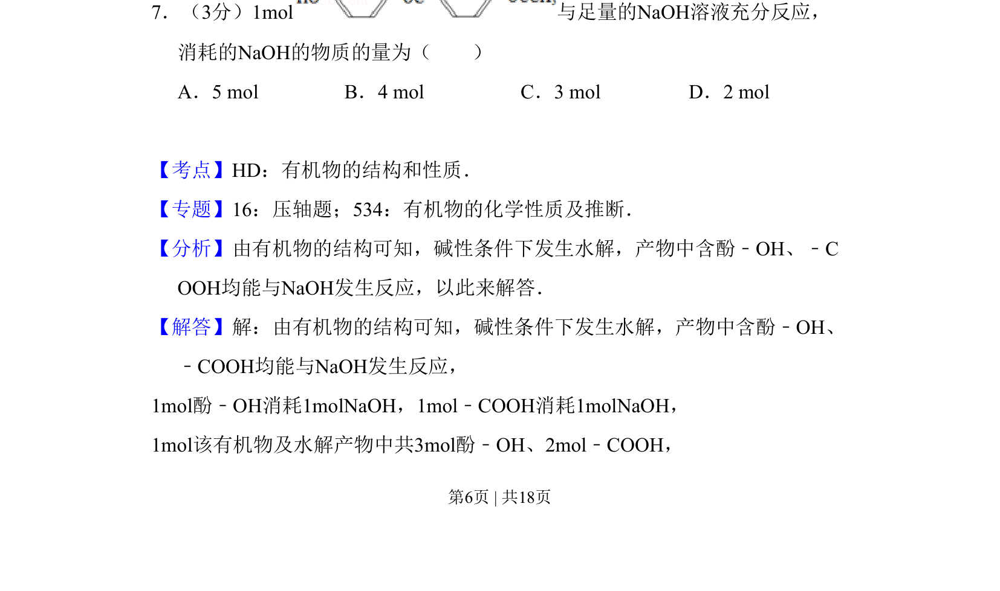
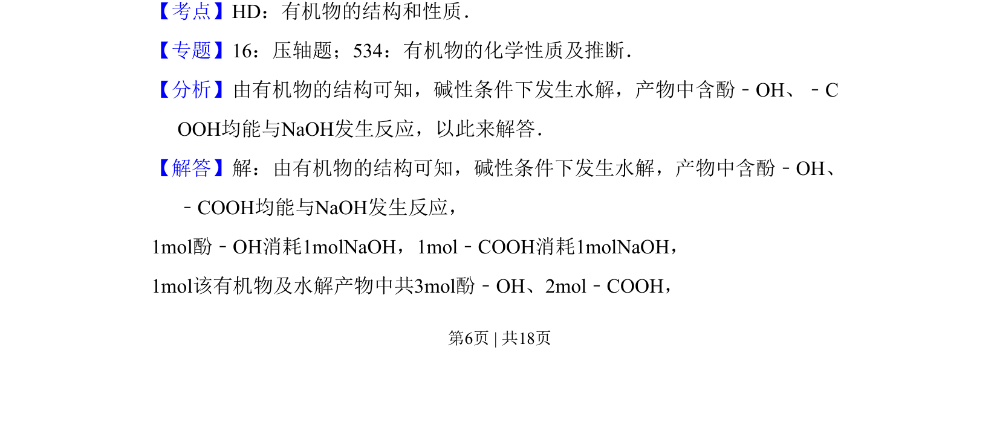
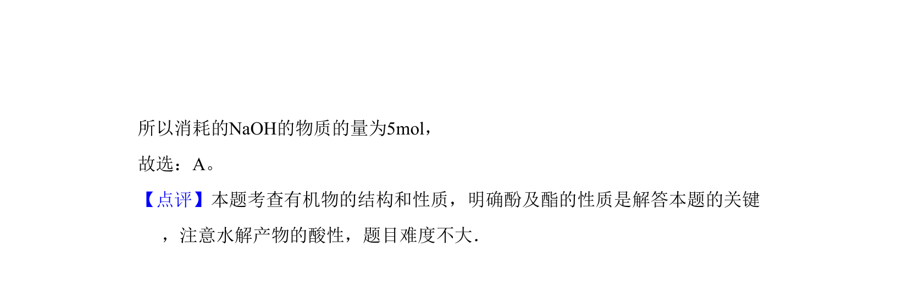

考点：有机物的结构和性质 水解反应 酚羟基 羧基

该题考查有机物在碱性条件下的水解反应及酚羟基、羧基与氢氧化钠的定量反应计算。


📄 原 PDF 第 6 页：
素材/真题/吉林/2008-2024·（吉林）化学高考真题/2009年高考化学试卷（全国卷Ⅱ）（解析卷）.pdf
7．（3分）1mol与足量的NaOH溶液充分反应， 消耗的NaOH的物质的量为（ ） A．5 mol B．4 mol C．3 mol D．2 mol
【考点】HD：有机物的结构和性质．菁优网版权所有 【专题】16：压轴题；534：有机物的化学性质及推断． 【分析】由有机物的结构可知，碱性条件下发生水解，产物中含酚﹣OH、﹣C OOH均能与NaOH发生反应，以此来解答． 【解答】解：由有机物的结构可知，碱性条件下发生水解，产物中含酚﹣OH、 ﹣COOH均能与NaOH发生反应， 1mol酚﹣OH消耗1molNaOH，1mol﹣COOH消耗1molNaOH， 1mol该有机物及水解产物中共3mol酚﹣OH、2mol﹣COOH，